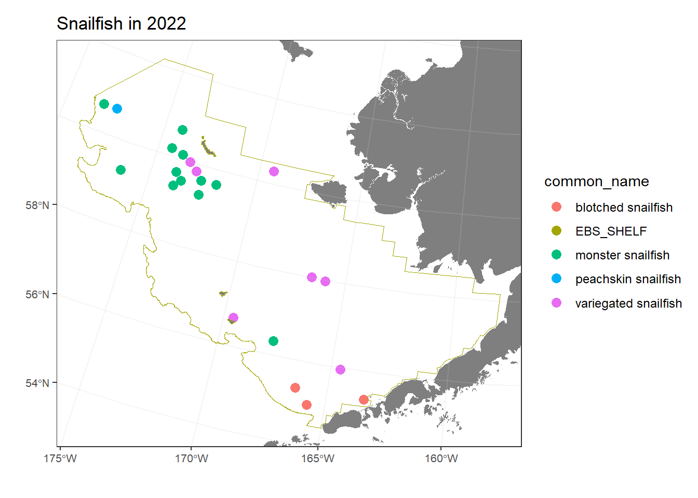
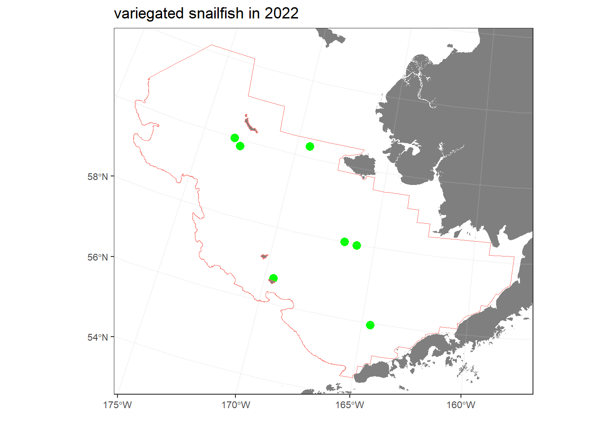
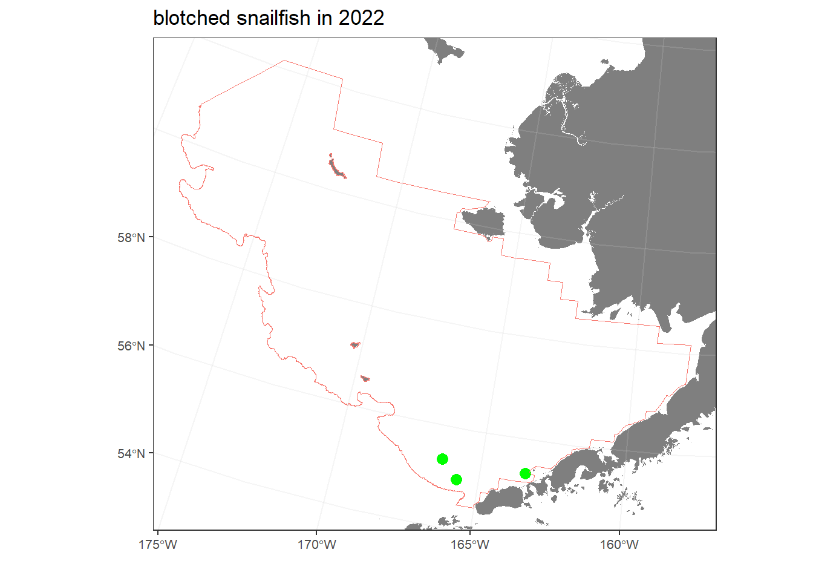
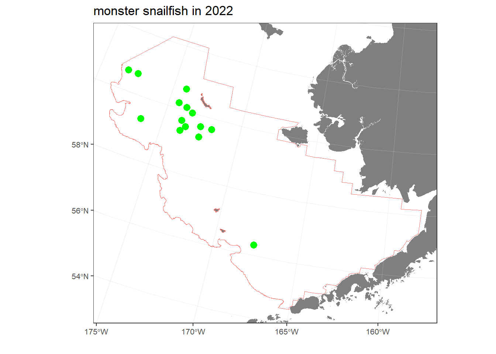
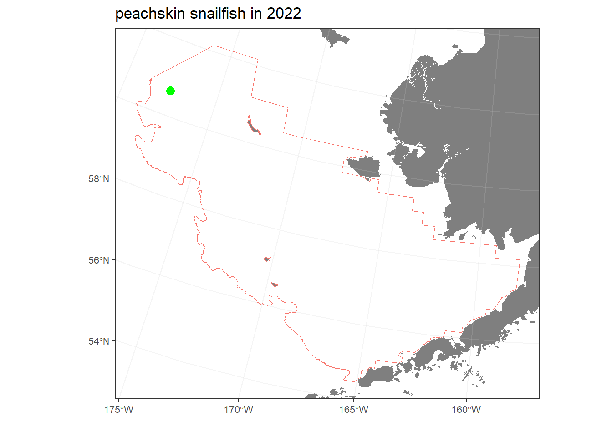

Snailfish found in the Eastern Bering Sea in 2022
DRAFT: March 27, 2023
This report compares the distribution and relative abundance of 4 snailfish species (specifically, variegated snailfish, blotched snailfish, monster snailfish, peachskin snailfish; Figure 1) with maps from the 2022 in the eastern Bering sea shelf bottom trawl survey. Survey results reported herein include estimates of catch-per-unit-effort for most snailfishes and geographic distributions (Figure 2); Markowitz, Dawson, Charriere, Prohaska, Rohan, Stevenson, et al. (2022b); Markowitz, Dawson, Charriere, Prohaska, Rohan, Haehn, et al. (2022); Markowitz, Dawson, Charriere, Prohaska, Rohan, Stevenson, et al. (2022a); Markowitz et al. (In review)). Data is publicly available from the Fisheries One Stop Shop (NOAA Fisheries Alaska Fisheries Science Center, 2023).


variegated snailfish (Liparis gibbus)
The geographic distribution of variegated snailfish (Figure 3), and the raw data that went into that map (Table 1).

| stratum | station | vessel_name | date_time | cpue_kgkm2 | cpue_nokm2 | weight_kg | count | bottom_temperature_c | surface_temperature_c | depth_m |
|---|---|---|---|---|---|---|---|---|---|---|
| 31 | D-06 | Vesteraalen | 06/12/2022 17:43:26 | 0.13 | 21.02 | 0.01 | 1 | 2.7 | 8.5 | 94 |
| 10 | J-04 | Alaska Knight | 06/20/2022 17:04:21 | 88.71 | 64.05 | 4.16 | 3 | 1.3 | 6.9 | 56 |
| 31 | J-03 | Vesteraalen | 06/23/2022 07:26:50 | 0.30 | 79.28 | 0.01 | 4 | 0.6 | 7.1 | 62 |
| 32 | F-20 | Vesteraalen | 06/30/2022 11:42:36 | 0.44 | 57.37 | 0.02 | 3 | 4.1 | 5.7 | 79 |
| 20 | Q-19 | Alaska Knight | 07/02/2022 15:49:56 | 1.40 | 18.68 | 0.07 | 1 | 2.7 | 6.0 | 44 |
| 43 | PO2524 | Alaska Knight | 07/18/2022 07:35:43 | 9.30 | 18.82 | 0.49 | 1 | -0.5 | 8.0 | 80 |
| 43 | P-25 | Alaska Knight | 07/17/2022 07:27:16 | 51.12 | 72.72 | 1.41 | 2 | 0.1 | 8.0 | 75 |
blotched snailfish (Crystallichthys cyclospilus)
The geographic distribution of blotched snailfish (Figure 4), and the raw data that went into that map (Table 2).

| stratum | station | vessel_name | date_time | cpue_kgkm2 | cpue_nokm2 | weight_kg | count | bottom_temperature_c | surface_temperature_c | depth_m |
|---|---|---|---|---|---|---|---|---|---|---|
| 31 | B-08 | Alaska Knight | 06/11/2022 13:03:37 | 2.65 | 22.09 | 0.12 | 1 | 3.7 | 8.5 | 51 |
| 50 | A-04 | Alaska Knight | 06/13/2022 07:08:52 | 33.64 | 39.11 | 1.72 | 2 | 4.0 | 6.6 | 130 |
| 50 | B-03 | Alaska Knight | 06/15/2022 13:29:18 | 6.31 | 18.82 | 0.34 | 1 | 4.0 | 7.7 | 132 |
monster snailfish (Careproctus phasma)
The geographic distribution of monster snailfish (Figure 5), and the raw data that went into that map (Table 3).

| stratum | station | vessel_name | date_time | cpue_kgkm2 | cpue_nokm2 | weight_kg | count | bottom_temperature_c | surface_temperature_c | depth_m |
|---|---|---|---|---|---|---|---|---|---|---|
| 50 | E-01 | Alaska Knight | 06/24/2022 13:53:25 | 0.36 | 18.12 | 0.02 | 1 | 3.7 | 8.0 | 129 |
| 41 | R-26 | Vesteraalen | 07/18/2022 07:19:29 | 0.50 | 20.84 | 0.02 | 1 | -0.5 | 8.2 | 86 |
| 43 | QP2726 | Vesteraalen | 07/18/2022 12:33:36 | 0.62 | 20.82 | 0.03 | 1 | 0.8 | 8.6 | 99 |
| 43 | O-23 | Vesteraalen | 07/14/2022 07:22:14 | 2.42 | 19.53 | 0.12 | 1 | -0.7 | 7.9 | 77 |
| 43 | QP2625 | Alaska Knight | 07/17/2022 10:32:35 | 0.54 | 18.07 | 0.03 | 1 | -0.2 | 8.1 | 88 |
| 43 | P-25 | Alaska Knight | 07/17/2022 07:27:16 | 3.05 | 36.36 | 0.08 | 1 | 0.1 | 8.0 | 75 |
| 62 | O-26 | Vesteraalen | 07/19/2022 10:02:16 | 2.42 | 138.72 | 0.12 | 7 | 0.6 | 8.5 | 103 |
| 43 | ON2625 | Vesteraalen | 07/19/2022 12:49:29 | 3.17 | 154.85 | 0.16 | 8 | 0.7 | 8.7 | 101 |
| 62 | N-26 | Vesteraalen | 07/19/2022 16:02:25 | 2.08 | 75.53 | 0.11 | 4 | 1.4 | 8.8 | 109 |
| 43 | N-24 | Alaska Knight | 07/16/2022 13:42:55 | 0.96 | 38.34 | 0.05 | 2 | -0.1 | 8.2 | 88 |
| 43 | O-24 | Alaska Knight | 07/16/2022 16:47:21 | 2.30 | 19.52 | 0.12 | 1 | -0.5 | 8.1 | 84 |
| 61 | N-30 | Vesteraalen | 07/22/2022 10:34:43 | 2.26 | 56.41 | 0.12 | 3 | 2.4 | 9.3 | 135 |
| 61 | R-32 | Alaska Knight | 07/25/2022 07:39:02 | 1.80 | 63.29 | 0.11 | 4 | 2.0 | 9.4 | 161 |
| 61 | R-31 | Alaska Knight | 07/25/2022 10:47:34 | 6.14 | 277.29 | 0.31 | 14 | 1.5 | 9.4 | 146 |
peachskin snailfish (Careproctus scottae)
The geographic distribution of peachskin snailfish (Figure 6), and the raw data that went into that map (Table 4).

| stratum | station | vessel_name | date_time | cpue_kgkm2 | cpue_nokm2 | weight_kg | count | bottom_temperature_c | surface_temperature_c | depth_m |
|---|---|---|---|---|---|---|---|---|---|---|
| 61 | R-31 | Alaska Knight | 07/25/2022 10:47:34 | 14.85 | 138.65 | 0.75 | 7 | 1.5 | 9.4 | 146 |